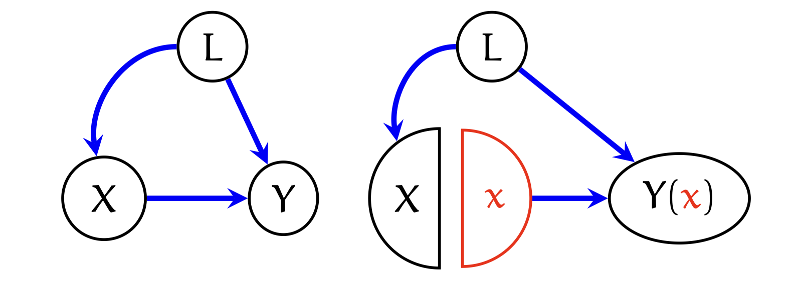

Introduction: Two Worlds of Causality
인과추론(Causal Inference)에는 오랫동안 두 가지의 거대한 흐름이 존재해 왔습니다.
- Neyman-Rubin으로 대표되는 잠재적 결과(Potential Outcomes, Counterfactuals) 프레임워크
- Potential Outcomes: \(Y(x)\)와 같이 “만약 치료 \(X\)를 받았다면(또는 받지 않았다면) 있었을 결과”를 직접적으로 변수로 정의하여 엄밀한 수식적 전개를 가능하게 합니다.
- Judea Pearl로 대표되는 그래프 모형(Graphical Models, DAGs) 프레임워크입니다.
- Graphical Models: 변수 간의 인과 관계를 시각적인 화살표로 표현하고, \(d\)-separation과 같은 규칙을 통해 조건부 독립성을 직관적으로 파악하게 해줍니다.
- Neyman-Rubin으로 대표되는 잠재적 결과(Potential Outcomes, Counterfactuals) 프레임워크
하지만 이 두 접근법 사이에는 미묘한 단절이 있었습니다. DAG(Directed Acyclic Graph) 위에는 관측된 변수 \(X, Y\)만 존재할 뿐, 가상의 변수 \(Y(x)\)는 존재하지 않기 때문입니다.
Single World Intervention Graphs (SWIGs)는 Thomas Richardson과 James Robins가 제안한 개념으로, 이 두 세계를 Node Splitting(노드 분리)이라는 기법을 통해 완벽하게 통합하려는 시도입니다.
이번 포스트에서는 SWIGs가 어떻게 그래프 위에 Counterfactual을 명시적으로 표현하고, 복잡한 인과 식별(Identification) 문제를 해결하는지 살펴보겠습니다.
1. The Elephant in the Room: The Disconnect
1.1. Potential Outcomes Setup
- 이분 변수(binary treatment) \(X\)와 결과 \(Y\)가 있다고 합시다. 우리는 두 개의 잠재적 결과 변수를 정의합니다. \[Y(x=0), \quad Y(x=1)\]
- 이는 각각 \(X=0\) 또는 \(X=1\)로 할당되었을 때 관측될 \(Y\)의 값을 의미합니다. Pearl의 \(do\)-calculus 표기법으로는 다음과 같이 연결됩니다. \[P(Y(x)=y) \equiv P(Y=y \mid do(X=x))\]
- 하지만 Counterfactual 표기법은 더 일반적입니다.
- 예를 들어, “실제로 치료를 받은 사람(\(X=1\))이 만약 치료를 받지 않았더라면(\(x=0\)) 겪었을 결과”인 ETT (Effect of Treatment on the Treated)는 \(do\) 표기법만으로는 표현하기 어렵습니다. \[P(Y(x=0)=y \mid X=1)\]
1.2. The Gap in Standard DAGs
- 표준적인 인과 그래프(Causal DAG)를 생각해 봅시다.
- 교란요인(Confounding)이 없는 경우, 우리는 \(X \to Y\)라고 그립니다.
- 이 모델은 “ignorability” 가정, 즉 처치가 잠재적 결과와 독립임을 암묵적으로 가정합니다.
\[X \perp Y(x_0) \quad \& \quad X \perp Y(x_1)\]

- 여기서 “방 안의 코끼리(Elephant in the room)”가 등장합니다.
- 위 수식의 \(Y(x_0), Y(x_1)\) 변수는 그래프 어디에도 그려져 있지 않습니다.
- 따라서 그래프의 강력한 도구인 \(d\)-separation을 사용하여 \(X\)와 \(Y(x)\) 사이의 독립성을 읽어낼 수가 없습니다.
2. SWIGs: Construction via Node Splitting
- SWIGs는 이 문제를 해결하기 위해 Node Splitting이라는 직관적이고 강력한 아이디어를 도입합니다.
2.1. The Intuition: The Emetic Example
- Robins, VanderWeele, Richardson(2007)은 다음과 같은 사고 실험을 제안했습니다.
“누군가가 치료제 \(X=1\)을 선택(swallow)하는 것을 관찰하는 동시에, 그가 치료제를 먹지 않았을 때(\(x=0\))의 결과를 어떻게 알 수 있을까?”
환자가 약을 삼키는 순간(\(X=1\)), 즉시 안전한 구토제(emetic)를 투여하여 약이 혈류로 들어가기 전에 토하게 만든다고 가정해 봅시다(\(x=0\)으로 강제).
환자의 선택은 \(X=1\) (Random nature)로 남아 있습니다.
하지만 신체적 노출은 \(x=0\) (Fixed nature)이 됩니다.
이때 관측된 결과 \(Y\)는 \(Y(x=0)\)이 됩니다.
이 논리에 따라 변수 \(X\)를 두 부분으로 쪼개는 것이 SWIG의 핵심입니다.
2.2. Construction Algorithm
- 그래프 \(G\)와 개입(Intervention) 대상 변수 집합 \(A = \{A_1, \dots, A_k\}\)가 주어졌을 때, SWIG \(\mathcal{G}(a)\)는 다음 두 단계로 생성됩니다.
Step 1: Node Splitting
- 개입 변수 \(A\)를 랜덤 노드(Random node) \(A\)와 고정 노드(Fixed node) \(a\)로 분리합니다.
- Random Node \(A\): 원래 그래프 \(G\)에서 들어오는 모든 화살표(입력)를 받습니다. (교란요인의 영향을 받는 자연스러운 상태)
- Fixed Node \(a\): 원래 그래프 \(G\)에서 나가는 모든 화살표(출력)를 보냅니다. (하위 변수들에게 영향을 미치는 고정된 값)

Step 2: Relabeling Descendants
- 고정 노드 \(a\)의 자손(Descendant) 변수들은 이제 \(a\)의 값에 영향을 받으므로, 변수명을 잠재적 결과(Counterfactual) 형태로 바꿉니다.
- 예: \(Y\)가 \(A\)의 자손이라면, \(Y \to Y(a)\)로 변경.
- 중첩된 구조: \(Z\)가 \(A\)의 자손이고 \(Y\)가 \(Z\)의 자손이라면, \(Z \to Z(a)\), \(Y \to Y(a, \dots)\).

3. Mathematical Properties
- SWIG는 단순한 그림이 아닙니다. 여기에는 엄밀한 확률적 구조가 내재되어 있습니다.
3.1. Factorization
- 원래 그래프 \(G\)가 관측 데이터 \(P(V)\)를 분해(factorize)하듯이, SWIG \(\mathcal{G}(\tilde{a})\)는 Counterfactual 분포 \(P(\mathbb{V}(\tilde{a}))\)를 분해합니다.
\[P(\mathbb{V}(\tilde{a})) = \prod_{W \in \mathbb{V}(\tilde{a})} P(W \mid pa_{\mathcal{G}(\tilde{a})}(W))\]
3.2. Modularity (The Linking Assumption)
- SWIG의 가장 강력한 점은 관측 세계와 반사실적 세계를 연결하는 Modularity 가정입니다.
- SWIG 상의 변수 \(Y(a)\)의 조건부 확률은, 원래 그래프 \(G\)에서 부모 변수 \(PA_Y\) 중 개입 변수 \(A\)를 고정값 \(a\)로 치환한 조건부 확률과 같습니다. \[P(Y(a) = y \mid Pa_{Y(a)} = p) = P(Y = y \mid Pa_Y = p')\]
- 단, \(p'\)은 \(p\)에서 개입변수 \(A\)가 \(a\)로 대체된 값
- 이 성질 덕분에, 우리는 SWIG 상에서 읽어낸 독립성을 통해 식별(Identification)을 수행할 수 있습니다.
3.3. d-separation in SWIGs
- SWIG상에서의 \(d\)-separation은 Counterfactual 변수들 간의 조건부 독립성을 의미합니다.
- 만약 SWIG \(\mathcal{G}(a)\)에서 \(Y(a)\)와 \(X\)가 \(d\)-separated 되어 있다면, 다음이 성립합니다. \[Y(a) \perp X \quad \text{in } P(\mathbb{V}(a))\]
아래 설명이 잘못된 것 같아. 첨부한 이미지를 확인하면 A는 H의 자식이 아니야. 위의 이미지와 아래
4. Application 1: Complex Independence (The Kite Graph)
- SWIG의 위력을 보여주는 유명한 예시인 “Kite Graph”를 살펴봅시다.

- 문제 상황:
- 원래 그래프에서 \(Z\)는 \(A\)와 \(Y\) 사이의 매개변수이고, \(H\)는 \(Z\)와 \(B\)에 동시에 영향을 주는 숨겨진 교란요인입니다. (\(A\)와 \(H\)는 독립적입니다.)
- 여기서 다음의 조건부 독립성이 성립하는지 묻는다면 매우 헷갈립니다. \[Y(a, b) \perp B(a) \mid Z(a), A\]
- SWIG를 통한 해결:
- SWIG를 그려보면(위 그림 참조), \(A\)와 \(B\)에 개입하여 \(a, b\)로 고정했을 때:
- \(Y(a, b)\)는 오직 \(Z(a)\)와 고정된 값 \(b\)에 의해서만 결정됩니다. (즉, \(Y(a,b)\)로 들어오는 화살표는 \(Z(a)\)에서 오는 것뿐입니다.)
- \(Y(a, b)\)와 \(B(a)\)를 잇는 모든 경로는 반드시 \(Z(a)\)를 통과해야 합니다. (예: \(Y(a,b) \leftarrow Z(a) \leftarrow H \rightarrow B(a)\) 등)
- 이때 \(Z(a)\)가 조건부로 주어지면(conditioned), \(Z(a)\)를 통하는 이 경로들이 모두 차단(blocked)됩니다.
- 또한 원래 그래프에서 \(A\)는 \(H\)와 독립적이며, SWIG 상에서 \(A\)(랜덤 변수)는 \(Z(a)\)로 가는 링크가 끊겨 있어(\(a\)로 대체됨) 다른 변수들과 d-separated 되어 있습니다.
- 따라서 \(Z(a)\)와 \(A\)가 주어졌을 때 \(Y(a,b)\)와 \(B(a)\)는 독립이므로, 위 명제는 참(True)입니다.
- 이는 Pearl의 \(do\)-calculus만으로는 직관적으로 파악하기 어렵거나, 과거에 잘못 판단되었던 문제입니다.
- SWIG를 그려보면(위 그림 참조), \(A\)와 \(B\)에 개입하여 \(a, b\)로 고정했을 때:
5. Application 2: Adjustment Formula Derivation
- 교란요인 \(L\)이 있을 때 \(P(Y(x)=y)\)를 구하는 표준적인 Backdoor Adjustment 공식을 SWIG를 이용해 유도해 보겠습니다.

목표: \(P(Y(x)=y)\) 식별하기.
Derivation:
- SWIG에서 독립성 읽기:
- SWIG 그림을 보면 \(X\) (random node)와 \(Y(x)\) 사이에는 \(L\)을 통하는 뒷문 경로가 있습니다. 하지만 \(X\)로 들어오는 화살표가 없고 \(x\) (fixed node)에서 나가는 화살표만 \(Y(x)\)로 가므로, \(L\)을 조건부로 주면 \(X\)와 \(Y(x)\)는 독립입니다. \[Y(x) \perp X \mid L\]
- 주의: SWIG 그림 상에서 \(L \to X\)이고 \(L \to Y(x)\)입니다. 따라서 \(X\)와 \(Y(x)\)는 \(L\)을 통해 d-connected 됩니다. 하지만 \(L\)을 알면(\(L\) given), 이 경로가 차단되므로 \(Y(x) \perp X \mid L\)이 성립합니다.
- 전확률의 법칙: \[P(Y(x)=y) = \sum_{l} P(Y(x)=y \mid L=l) P(L=l)\]
- 조건부 독립성 적용 (\(Y(x) \perp X \mid L\)): \[= \sum_{l} P(Y(x)=y \mid L=l, X=x) P(L=l)\]
- \(X=x\) 조건을 추가해도 확률이 변하지 않음
- Consistency (Modularity): \(X=x\)일 때, \(Y(x)\)는 관측된 \(Y\)와 같습니다. \[= \sum_{l} P(Y=y \mid L=l, X=x) P(L=l)\]
이로써 우리가 잘 아는 Backdoor Adjustment 공식이 유도되었습니다.
SWIG는 이 과정에서 “왜 \(X=x\)를 조건부에 넣을 수 있는가?”에 대한 명확한 그래픽적 근거를 제공합니다.
6. Conclusion
- SWIGs(Single World Intervention Graphs)는 인과추론의 두 언어, 즉 Potential Outcomes와 Graphs를 통역하는 강력한 도구입니다.
- Unification: \(Y(x)\)와 같은 반사실적 변수를 그래프의 노드로 명시적으로 포함시킵니다.
- Node Splitting: 처치 변수를 ’관찰된 선택(\(X\))’과 ’물리적 개입(\(x\))’으로 분리하여 인과적 상황을 모델링합니다.
- Clarity: 복잡한 조건부 독립성이나 식별 문제를 \(d\)-separation만으로 풀 수 있게 해줍니다.
- 이제 우리는 “가정을 그래프에 그리고, 그 그래프에서 반사실적 결론을 읽어내는” 완전한 파이프라인을 갖게 되었습니다.
References [1] Richardson, T. S., & Robins, J. M. (2013). Single World Intervention Graphs (SWIGs): Unifying the Counterfactual and Graphical Approaches to Causality. CSSS Technical Report. [2] Slide source: Richardson, T. (2014). Data, Society and Inference Seminar, Stanford.